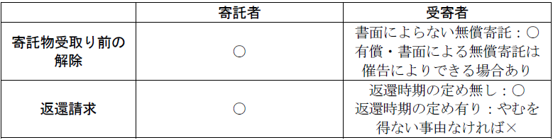

第６編 契約各論
第８章 委任
1. 意義
委任とは、当事者の一方（委任者）が、相手方（受任者）に、「法律行為」をすることを委託し、相手方がこれを承諾することによって成立する契約をいう（643条）。
「法律行為でない事務」を委託した場合（ex. 医師に対する診療の委託、幼児の養育の委託）は準委任という（656条）。
2. 法的性質
原則として、諾成・無償・片務契約である。もっとも、有償の特約（報酬を支払う旨の特約）がある場合には、諾成・有償・双務契約である。
3. 代理との関係
委任が法律行為の委任を目的とする場合には同時に代理権の授与を伴うことが多い。
しかし、委任は一定の事務の処理を目的とする委任者･受任者間の契約であり、代理権の授与は代理人が本人に直接効果を生じる法律行為をすることができる権限を本人によって授与されることであって、両者に必然的な関係はない。
従って、委任契約と代理権の授与は別個の行為として独立に取り扱うべきである（通説）。
委任は当事者の一方（委任者）が、事務の処理を相手方（受任者）に委託し、相手方がこれを承諾することにより成立する諾成契約である（643条）。
契約に際しては、委任状が交付されるのが通常であるが、これは第三者に対し受任者の権限を示すためのものであり、委任契約の成立に不可欠のものではない。
1. 受任者の義務
(1) 善管注意義務（644条）
委任が当事者間の信頼関係を基礎としていることから、有償・無償を問わず、受任者に善管注意義務が要求される。
(2) 事務処理義務の一身専属性
(a) 復受任者の選任
受任者は、①委任者の許諾を得たとき、又は②やむを得ない事由があるときでなければ、復受任者を選任することができない（644条の２第１項）。
受任者は、自ら委任事務を処理し、他人に任せてはならないのが原則である。
(b) 代理権を有する復受任者の権利義務
代理権を有する受任者が代理権を有する復受任者を選任したときは、復受任者は、委任者に対して、その権限の範囲内において、受任者と同一の権利を有し、義務を負う（644条の２第２項）。受任者又は復受任者が代理権を有しない場合は、通常は委任者と復受任者の間に権利義務は生じない。
(3) 事務処理に付随する義務
(a) 委任事務処理の報告義務（645条）
受任者は、委任者の請求があるときは、いつでも委任事務の処理の状況を報告し、委任が終了した後は、遅滞なくその経過及び結果を報告しなければならない（645条）。
(b) 受領物の引渡義務等（646条）
受任者は、委任事務を処理するに当たって受け取った金銭等及び収取した果実を委任者に引き渡さなければならず、また、委任者のために自己の名で取得した権利を委任者に移転しなければならない（646条）。
(c) 金銭を消費した場合の責任（647条）
受任者は、委任者に引き渡すべき金銭又は委任者の利益のために用いるべき金銭を自己のために消費したときは、その消費した日以後の利息を支払わなければならず、なお損害があるときは、その賠償の責任を負う（647条）。
この場合において、受任者の故意・過失の有無、損害の証明の有無を問わず、当然に法定利息を請求でき、さらに損害の立証さえあれば法定利息以上の損害賠償をも請求できる点で、419条の例外となっている。
2. 委任者の義務
(1) 有償委任における報酬支払義務（648条）
特約がなければ、無償が原則である（648条１項）。
(a) 報酬支払の時期
報酬支払の時期は、特約がなければ、委任事務履行後、すなわち後払いが原則である（648条２項本文）。ただし、期間をもって報酬を定めたときは、その期間の経過した後に請求することができる（同条２項ただし書）。
委任事務の履行により得られる成果に対して報酬を支払う成果完成型の委任契約の場合、その成果が引渡しを要するときは、報酬は、その成果の引渡しと同時に、支払わなければならない（648条の２第１項）。
(b) 委任が委任者の帰責事由によらずに委任事務の履行をすることができなくなった場合又は委任が履行の中途で終了した場合（履行割合型委任）
受任者は、既にした履行の割合に応じて報酬を請求することができる（同条３項）。当事者双方に帰責事由がない場合のみならず、受任者に帰責事由がある場合にも、割合報酬を請求することができる。なお、委任者に帰責事由がある場合は、危険負担の適用の問題となる（536条2項）。
(c) 委任が委任者の帰責事由によらずに委任事務の成果を完成することができなくなった場合又は委任が成果の完成前に終了した場合（成果完成型）
既にした成果が可分で、可分な部分の給付によって委任者が利益を受ける場合は、委任者が受ける利益の割合に応じて、受任者は報酬を請求することができる（648条の２第２項、634条）。
(2) 費用前払義務（649条）
委任事務につき費用を要するときは、委任者は、受任者の請求により、その前払をしなければならない。
(3) 立替費用の償還義務（650条１項）
受任者は、委任事務処理に必要と認められる費用を支出したときは、委任者に対し、その費用及び支出の日以後の利息の償還を請求することができる。
(4) 債務の代弁済の義務（650条２項）
受任者は、委任事務処理に必要と認められる債務を負担したときは、委任者に対し、自己に代わってその弁済をすることを請求でき、その債務が弁済期にないときは、委任者に対し、担保を提供させることができる。
(5) 損害賠償義務（650条３項）
受任者は、委任事務を処理するため自己に過失なく損害を受けたときは、委任者に対し、その賠償を請求できる。
委任者の故意・過失を要しないが、受任者の無過失が要件となる。
1. 契約一般の終了原因
契約一般の終了原因（委任事務の終了、委任事務の履行不能、期限の満了など）によって終了する。
2. 各当事者の無理由解除権（651条）
委任は各当事者がいつでも解除することができる（同条１項）。
(1) 意義
委任は当事者間の信頼関係を基礎とする契約であるから、相手方を信頼できなくなったときは、委任者・受任者のいずれからでも特別の理由がなくても自由に解約できるとするものである。
委任契約の解除は将来に向かってのみその効力を生じる（遡及効はない。652条、620条）。
当事者が特約で解除権の放棄を約するのは、公序良俗に反しない限り、契約自由の原則から自由であると解されている。
(2) 損害賠償の要否
当事者の一方が相手方に不利な時期に委任の解除をしたとき又は委任者が受任者の利益（専ら報酬を得ることによるものを除く）をも目的とする委任を解除したときは、その損害を賠償しなければならない（この場合には、故意・過失を問わない）。ただし、やむを得ない事由（ex.受任者が著しく不誠実な行動に出た）があったときは、賠償責任は生じない（同条２項）。
3. 当事者の死亡等（653条）
ⅰ 委任者又は受任者が死亡した場合
ⅱ 委任者又は受任者が破産手続開始の決定を受けた場合
ⅲ 受任者が後見開始の審判を受けた場合
委任者の後見開始は、終了原因ではない。
※ 653条は強行規定ではないので、当事者の特約により本条の各終了事由を排除することは可能である。
4. 委任終了の際の特別措置
(1) 受任者の善処義務（654条）
委任が終了しても、急迫の事情があるときは、受任者・その相続人・法定代理人は、委任者･その相続人･法定代理人が委任事務を処理することができるに至るまで、必要な処分をしなければならない。
(2) 委任終了の対抗要件（655条）
委任の終了事由は、これを相手方に通知したとき、又は相手方がこれを知ったときでなければ、これをもって相手方に対抗することができない。
第９章 寄託
1. 意義・法的性質
寄託とは、当事者の一方（寄託者）がある物を保管することを相手方（受寄者）に委託し、相手方がこれを承諾することで成立する契約をいう（657条）。
諾成・双務契約である。また、原則は、無償契約であるが（無償寄託）、報酬の支払が約される場合には、有償契約となる（有償寄託）。
2. 他の契約との区別
(1) 労務－保管
寄託は、労務供給契約の一種である点で、雇用・請負・委任と共通性を有するが、労務の内容がもっぱら保管に限定される点で特色を有する。そこで、コインロッカーや貸駐車場のように、労務を提供することなく保管場所だけを提供する場合は、賃貸借であり寄託ではない。また、寄託は契約の中心的な目的が物の保管であることを要し、担保のために質権者が目的物を占有しても寄託とはならない。
(2) 処分権の有無
受寄者は占有権を取得するだけで処分権は取得しない。この点で消費貸借と異なる。
これに対して、消費寄託ならば、処分権も取得する（666条）。
(3) 受寄者と寄託者からの譲受人と対抗関係
Ｑ 寄託物を寄託者から譲り受けた者は、｢引渡し｣（178条）なく、その所有権取得を受寄者に対抗できるか。
→ 引渡不要説（最判昭29.８.31）
寄託は、当事者間の合意があれば、寄託物の交付がなくても効力が生ずる諾成契約の一種である。
契約の成立に要式は不要であるが、書面によって寄託した場合、別段の規律が及ぶことがある。
1. 受寄者の義務
(1) 目的物の保管義務
(a) 注意義務
報酬の有無により注意義務の程度が異なる点が特徴である。
無報酬の受寄者は、「自己の財産に対するのと同一の注意」をもって保管すればよい（659条）。
有償の受寄者は、「善良な管理者の注意」義務（善管注意義務・400条）を負う。
(b) 寄託物使用・再寄託の原則禁止（658条）
ⅰ 寄託物の原則使用禁止
受寄者は、寄託者の承諾を得なければ、寄託物を自ら使用することができない（658条１項）。
ⅱ 再寄託の原則禁止
受寄者は、寄託者の承諾を得たとき、又はやむを得ない事由があるときでなければ、寄託物を第三者に保管させること（再寄託・復寄託）ができない（658条２項）。
適法に第三者に保管させる場合、再受寄者は、寄託者に対し、その権限の範囲内で、受寄者と同一の権利を有し、義務を負う（658条３項）。
違法に再寄託した場合、それ自体が債務不履行である。これにより損害が生じたときは、再受寄者に故意・過失がなくとも、受寄者は責任を免れない。
(2) 通知義務等（660条）
(a) 通知義務（660条1項）
寄託物について権利を主張する第三者が受寄者に対して訴えを提起し、又は差押え、仮差押え若しくは仮処分をしたときは、寄託者が既にこれを知っているときを除き、受寄者は、遅滞なくその事実を寄託者に通知しなければならない。これは、寄託者に防御の機会を与えるためである。
なお、寄託者が既に知っているときは、通知は不要である。
(b) 返還義務（660条２項）
ⅰ 原則
第三者が寄託物について権利を主張する場合であっても、原則として、受寄者は、寄託者の指図がない限り、寄託者に寄託物を返還しなければならない（660条２項本文）。これにより、受寄者は、原則として、第三者に寄託物を引渡すこと拒否することができる。
この場合において、受寄者が寄託物を返還し、これにより第三者に損害が生じたときであっても、受寄者は賠償責任を負わない（660条３項）。
ⅱ 寄託者への返還を要しない場合
①受寄者が上記(2)(a)（660条１項）の通知をし、又は通知を要しない場合において、②寄託物を第三者に引き渡すべきことを命じた確定判決（同一の効力を有するものを含む。）があるときは、寄託者に寄託物を返還することを要しない（660条２項ただし書）。この場合、受寄者は、第三者に寄託物を引き渡したとしても、寄託者に対し、返還義務の不履行による責任を負わない。
(3) 委任の規定の準用（665条）
寄託契約では、委任の規定を多く準用している。
ⅰ 受寄者の金銭等の受取物の引渡義務（646条１項）
受寄者には収益権がない。
ⅱ 受寄者の権利移転義務（646条２項）
ⅲ 寄託者に引き渡すべき金銭を消費した場合の賠償義務（647条）
(4) 物権的返還請求権との関係等
(a) 物権的返還請求権との関係
寄託物返還請求権が消滅時効により消滅しても、寄託者は、受寄者が寄託物を時効取得するまでは、所有権に基づく物権的返還請求権を行使できる（大判大11.８.21）。
(b) 受寄者の返還拒絶権
有償の場合、受寄者は報酬の支払があるまで寄託物の返還を拒むことができる（大判明36.10.31）。受寄者は、寄託物について留置権を有する。
(c) 寄託物返還の場所（664条）
寄託物の返還は、その保管をすべき場所でしなければならない。ただし、受寄者が正当な事由によってその物を保管する場所を変更したときは、現在の場所で返還をすることができる。
寄託物の返還は取立債務となり、484条の例外となる。ただ、これは任意規定であり、特約で持参債務とすることもできる。
2. 寄託者の義務
(1) 有償寄託における報酬支払義務（665条・648条）
受寄者は、特約がない限り寄託者に報酬を請求できない。
(2) 損害賠償義務（661条）
寄託者は、寄託物の性質又は瑕疵によって生じた損害を受寄者に賠償しなければならない（661条本文）。しかし、寄託者が過失なくその性質若しくは瑕疵を知らなかったとき、又は受寄者がこれを知っていたときは、免責される（661条ただし書）。
委任者の責任は無過失責任（650条３項）であるが、寄託の場合には、寄託者の無過失により免責される場合が認められている。
(3) 委任の規定の準用（665条）
(a) 費用前払義務（649条）
(b) 立替費用償還義務（650条１項）
(c) 債務の代弁済義務（650条２項）
1. 寄託物受取り前の解除
(1) 寄託者による解除
寄託者は、受寄者が寄託物を受け取るまで、契約の解除をすることができる（657条の2第1項前段）。
(2) 受寄者による解除
(a) 無償寄託
無報酬の受寄者は、寄託物を受け取るまで、契約の解除をすることができる（657条の2第2項本文）。
(b) 有償寄託及び書面による無償寄託
有償寄託の受寄者及び書面による無償寄託の受寄者は、寄託物を受け取るべき時期を経過しても寄託者が寄託物を引渡さない場合、相当の期間を定めて引渡しの催告をし、その期間内に引渡しがないときは、契約の解除をすることができる（657条の2第3項）。
2. 契約一般の終了原因
契約一般の終了原因によって終了する。
3. 寄託者の返還請求権
(1) 寄託者の返還請求権
返還時期の定めの有無および無償寄託・有償寄託にかかわらず、寄託者はいつでも返還請求をすることができる（662条１項）。
(2) 受寄者の請求権
受寄者は、寄託者がその時期の前に返還を請求したことによって損害を受けたときは、寄託者に対し、その賠償を請求することができる（662条２項）。
また、有償寄託の場合には、寄託者の返還請求により、受寄者の責めに帰することができない事由により終了したものとして、受寄者は保管した期間の割合に応じて報酬を請求することができる（665条、648条３項）。
4. 受寄者の返還権（663条）
(1) 返還時期の定めがない場合
受寄者は、いつでも、返還することができる（663条１項）。
(2) 返還時期の定めがある場合
返還時期の定めがある場合、受寄者からは、やむを得ない事由がなければ、期限前に返還することができない（663条２項）。
【寄託の終了 まとめ】

混合寄託とは、受寄者が、複数の寄託者から種類及び品質が同一の物の寄託を受け、これらを混合して保管し、寄託されたものと同数量のものを返還する寄託をいう（665条の２）。
ex.倉庫寄託
混合寄託は、寄託物の所有権や処分権が受寄者に移転しない点で、消費寄託（666条）と異なる。
混合寄託の要件として、すべての寄託者の承諾が必要である。
寄託者は、寄託した数量の物の返還を請求することができる（665条の２第２項）。共有物の分割に関する256条と整合させたものである。
また、寄託物の一部が滅失した場合、総寄託物に対する各自が寄託した物の割合に応じて物の返還を請求することができる（同条３項）。寄託物の一部滅失のリスクを各寄託者に案分して負担させ、寄託者間の法律関係を明確にするものである。
消費寄託とは、受寄者が寄託物を消費し、同種・同等・同量の物を返還すればよい寄託をいう（666条）。
ex. 銀行預金
消費寄託は、目的物の占有と処分権が移転する点で消費貸借と共通する｡そこで、消費貸借における貸主の引渡義務（590条）及び借主の価額償還義務（592条）の規定が消費寄託に準用されている（666条２項）。